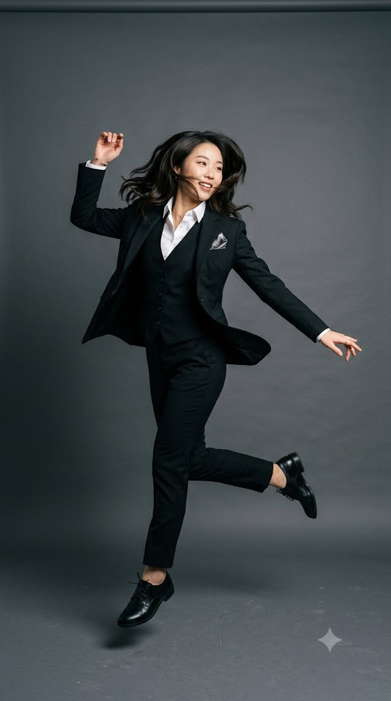

Style Guide
출근 코디 스타일 가이드
옷을 사기 전에, 그리고 아침에 옷장 앞에서 확인하면 좋은 기준을 주제별로 정리했습니다. 각 주제 끝에는 실제 코디에 적용한 예시를 연결해 두었습니다.
작성·검토 2026-11-04 · STYL.AI 편집
1. 블레이저 구매 전 확인할 핏 기준
블레이저는 출근 코디에서 가장 먼저 눈에 들어오는 옷이라, 비싼 원단보다 어깨와 기장이 맞는지가 인상을 좌우합니다. 매장에서든 온라인에서든 아래 다섯 가지를 순서대로 확인해 보세요.
매장에서 입어 볼 때
- 어깨 끝: 봉제선이 어깨뼈 끝에 오는지. 1cm 이상 바깥으로 넘치면 수선이 어렵습니다. 소매·기장은 줄일 수 있어도 어깨는 거의 고칠 수 없기 때문에 가장 먼저 봅니다.
- 단추 잠금: 단추를 잠그고 거울을 볼 때 단추 주변에 X자 주름이 없어야 합니다. 주름이 생기면 한 치수 크게 보세요.
- 팔 움직임: 팔을 앞으로 뻗거나 가방을 들어 봤을 때 등판이 크게 당기면 일상에서 불편합니다.
- 소매: 팔을 내렸을 때 손목뼈를 살짝 덮는 길이가 기본입니다.
- 기장: 와이드 팬츠와 입을 거라면 엉덩이 중간~끝, 스커트나 슬림 팬츠와 입을 거라면 골반 정도의 짧은 기장도 잘 어울립니다.
온라인으로 살 때
가지고 있는 블레이저 중 가장 잘 맞는 것을 바닥에 펴 놓고 어깨너비, 가슴단면, 총장, 소매길이를 재서 상세 페이지의 실측표와 비교하는 것이 가장 정확합니다. 사이즈 이름(S·M·55·66)은 브랜드마다 기준이 다릅니다.
체형별로 자주 쓰는 방법
- 어깨가 좁거나 처진 편: 얇은 패드가 들어간 블레이저로 어깨선을 잡아 줍니다.
- 어깨가 넓은 편: 패드가 없고 어깨가 부드럽게 떨어지는 블레이저가 부담이 적습니다.
- 키가 작은 편: 기장이 짧은 블레이저나 허리가 살짝 들어간 디자인이 비율에 유리합니다.
적용 예시: LOOK 01의 오트밀 블레이저는 와이드 슬랙스와 함께 입기 때문에 엉덩이 중간 기장을 기준으로 골랐습니다.
2. 슬랙스 기장과 신발 조합
같은 바지라도 어떤 신발을 신느냐에 따라 맞는 기장이 달라집니다. 바지를 수선하거나 살 때는 그 바지와 가장 자주 신을 신발을 신고 기장을 재는 것이 원칙입니다.
| 바지 핏 | 신발 | 권장 기장 |
|---|---|---|
| 와이드 | 로퍼·플랫 | 바닥에서 1~2cm 뜨고, 앞코를 반쯤 덮는 길이 |
| 와이드 | 펌프스(굽 5cm 이상) | 굽의 절반 정도를 덮는 길이. 굽이 다른 신발과 번갈아 신으면 끌릴 수 있습니다. |
| 스트레이트 | 로퍼·더비 | 밑단이 신발 등에 살짝 닿아 주름이 한 번 생기는 정도 또는 닿지 않는 정도 |
| 슬림·테이퍼드 | 로퍼·스니커즈 | 복숭아뼈가 살짝 보이는 9부 기장 |
밑위(라이즈)도 함께 보기
허리 밴드가 배꼽 근처까지 오는 하이웨이스트는 상의를 넣어 입을 때 다리가 길어 보이고, 허리가 골반에 걸리는 미드·로우 라이즈는 상의를 꺼내 입는 캐주얼 코디에 편합니다. 앉았을 때 허리 뒤가 내려가거나 배가 조이면 밑위가 맞지 않는 것입니다.
적용 예시: LOOK 01의 차콜 와이드 슬랙스는 로퍼 기준으로 앞코를 반쯤 덮는 기장입니다.
3. 복장 규정에 따라 코디 바꾸기
회사의 복장 규정은 보통 아래 세 단계 중 하나에 가깝습니다. 규정이 문서로 없다면 첫 2주 정도는 한 단계 격식 있게 입고, 팀의 분위기를 보고 조정하는 것이 무난합니다.
| 규정 | 기본 구성 | LOOK 01을 바꾼다면 |
|---|---|---|
| 비즈니스 포멀 금융·법무, 면접, 고객 미팅 | 같은 원단의 재킷·하의 셋업, 셔츠나 소매 있는 블라우스, 펌프스·더비 | 블레이저+슬랙스를 네이비·차콜 셋업으로, 탑을 흰 셔츠로, 로퍼는 그대로 또는 낮은 펌프스 |
| 비즈니스 캐주얼 대부분의 사무직 | 블레이저나 카디건, 블라우스·니트, 슬랙스·미디 스커트, 로퍼 | 그대로 입습니다. |
| 캐주얼 IT·스타트업, 금요일 | 니트·셔츠, 치노·다크 데님, 깨끗한 스니커즈 | 블레이저를 니트 카디건으로, 로퍼를 흰 가죽 스니커즈로 |
격식이 높을수록 색 수는 적게, 소재는 무광으로, 노출은 적게 가져간다고 기억하면 판단이 쉬워집니다.

4. 예산을 낮춰도 분위기를 지키는 법
- 투자 우선순위는 블레이저 → 신발 → 하의 → 이너 순서가 효율적입니다. 블레이저는 가장 크게 보이고, 신발은 저가품일수록 닳은 티가 빨리 납니다.
- 색은 뉴트럴로 통일하면 저가 아이템끼리 섞어도 조합이 깔끔하고, 적은 수로 여러 벌의 코디가 나옵니다.
- 수선비를 예산에 포함하세요. 저렴한 바지라도 기장을 맞추면 비싼 바지를 그대로 입는 것보다 단정해 보이는 경우가 많습니다.
- 광택과 보풀을 확인하세요. 폴리 100% 원단 중 지나치게 번들거리는 것은 저렴해 보이기 쉽습니다. 무광 원단을 고르세요.
예산대별 구체적인 조합은 LOOK 01 예산별 대안, 내 조건에 맞춘 조합은 조건별 추천에서 볼 수 있습니다.
5. 소재별 착용감과 관리
품질표시의 혼용률은 착용감과 관리 방법을 미리 알려 줍니다. 대표적인 출근복 소재를 비교하면 다음과 같습니다.
| 소재 | 장점 | 주의할 점 | 계절 |
|---|---|---|---|
| 울 | 통기성, 형태 유지, 구김 회복 | 물세탁 시 줄어들 수 있음, 좀벌레 | 가을~봄 (얇은 원단은 사계절) |
| 폴리에스터 | 구김에 강함, 세탁 쉬움, 저렴 | 정전기, 통기성 낮음, 광택이 강하면 저렴해 보임 | 사계절 |
| 면 | 부드럽고 흡습성 좋음 | 구김이 잘 생김 | 봄~가을 |
| 린넨 | 시원하고 가벼움 | 구김이 매우 잘 생김 (자연스러운 구김을 감안) | 여름 |
| 레이온·비스코스 | 찰랑이는 드레이프, 시원함 | 물에 젖으면 약해지고 줄어들 수 있음 | 봄~여름 |
오래 입는 보관 습관
- 재킷은 어깨가 넓은 옷걸이에, 니트는 개어서 보관합니다.
- 입은 옷은 바로 옷장에 넣지 말고 하루 정도 바람이 통하는 곳에 걸어 둡니다.
- 세탁소 비닐은 습기가 차므로 벗겨서 보관합니다.
- 관리 방법은 항상 옷 안쪽 케어 라벨을 우선합니다. 세탁 기호는 국제 표준 ISO 3758을 바탕으로 한 표시가 널리 쓰입니다.
이 가이드를 만든 방식
이 가이드는 일반적으로 통용되는 테일러링·의류 관리 기준을 바탕으로 AI 글쓰기 도구로 초안을 만들고, STYL.AI 운영자가 검토·수정해 정리했습니다. 특정 브랜드의 협찬이나 제휴 없이 작성했으며, 가격·소재 특성은 일반적인 경향을 설명한 것으로 개별 제품과 다를 수 있습니다. 틀린 내용을 발견하시면 문의로 알려 주세요. 확인 후 수정하고 수정일을 표시합니다.